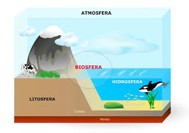
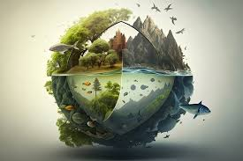

sobre:
A biosfera é a camada da Terra onde a vida existe. Ela compreende todas as regiões do planeta que suportam organismos vivos, incluindo a interação entre os seres vivos e o ambiente físico. Isso abrange: Atmosfera: A camada de ar onde ocorrem trocas gasosas essenciais, como o oxigênio para respiração e o dióxido de carbono para fotossíntese. Hidrosfera: Toda a água da Terra, incluindo oceanos, rios, lagos e água subterrânea, onde diversas formas de vida aquática prosperam. Litosfera: A camada superficial da crosta terrestre, onde plantas crescem, e muitos organismos terrestres habitam. A biosfera é um sistema dinâmico, no qual os seres vivos interagem entre si e com o ambiente, formando ecossistemas. Essas interações sustentam a biodiversidade e mantêm os ciclos naturais, como o ciclo da água, o ciclo do carbono e o ciclo do nitrogênio. A preservação da biosfera é essencial para o equilíbrio ecológico e a sobrevivência de todas as formas de vida no planeta.
 